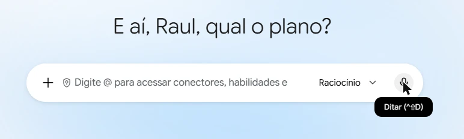
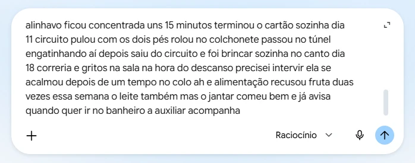
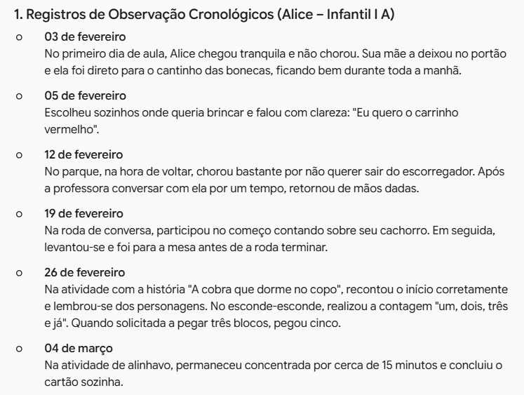

Passar registros a limpo
Pegue suas anotações, dite em voz alta e deixe o Gemini passar a limpo. No exemplo, vamos organizar as observações sobre alunos da Educação Infantil.
Alice
- 5/2 escolheu sozinha. "quero o carrinho vermelho"
- 12/2 parque: chorou p/ voltar → mão dada
dia 5 escolheu sozinha onde queria brincar falou eu quero o carrinho vermelho pediu com clareza
05/02Escolheu sozinha onde queria brincar e pediu com clareza: "Eu quero o carrinho vermelho".
12/02No parque, chorou na hora de voltar. Após conversar com a professora, retornou de mãos dadas.
Pegue suas anotações
- Pode ter abreviação, seta, frase pela metade: tudo serve.
- O importante é você entender e lembrar o que significa.
- Agora iremos usar a IA para passar a limpo.

Abra o Gemini
- No computador ou Chromebook, com a conta @educa (institucional).
- Verifique se aparece o símbolo do escudo na caixa de texto: é o símbolo da proteção de dados.
Iremos trabalhar com dados sensíveis de crianças. Apenas no Gemini com conta @educa (institucional), nunca no celular ou no ChatGPT. Por quê?
Organize as anotações abaixo, sobre uma criança da minha turma, em registros de observação claros: um registro por data, em ordem cronológica, com frases completas e boa pontuação. Use somente o que está no texto, sem acrescentar interpretações. Tire as repetições e hesitações. Se algum trecho estiver confuso, não adivinhe: liste no final como dúvida.
Comece pelas instruções
- Precisamos explicar a tarefa ao Gemini.
- Comece a mensagem fornecendo as instruções.
- Queremos que o modelo organize as anotações em registros claros, mas não invente informações ao tentar interpretá-las. Por isso, pedimos para perguntar explicitamente caso haja dúvidas.
- Para pular linhas sem enviar a mensagem acidentalmente, pressione as teclas Shift + Enter juntas.

Vamos ditar por voz
- Clique no botão do microfone.
- Ou pressione as teclas Ctrl + Shift + D.
- Na primeira vez, o navegador pedirá permissão para usar o microfone: clique em Permitir.
Fale e comente suas anotações
- Não se preocupe em "falar certo". O modelo entenderá a sua linguagem natural.
- Pode comentar cada acontecido, como se estivesse conversando com uma colega, enriquecendo com os detalhes que você lembrar.
- Dica: fale a data antes de cada nota.

Envie o ditado
- Sim, parece uma bagunça. Mas não tem problema, é justamente isso que a IA vai fazer: passar a limpo.
- É comum a transcrição errar nomes e números, e vale a pena dar uma conferida rápida.
- Clique na seta para enviar.
Se, em vez de fazer a tarefa, o Gemini responder algo como "sou apenas uma IA de texto", abra uma nova conversa e envie de novo.

Leia a resposta
- O Gemini devolve um texto corrido, já passado a limpo.
- Um registro por data, em ordem cronológica, com frases completas.
- Repetições e hesitações da fala ficam de fora.
Veja a transformação
- Interativo: toque em uma linha para ver o antes e depois.
- Você acabou de transformar um rascunho escrito no caderno em uma anotação digital, completa e organizada, pronta para alimentar relatórios e outras aplicações.
- Você economizou o tempo de passar a limpo.
- Verifique as informações antes de usar: caso a IA tenha errado, você pode corrigir.